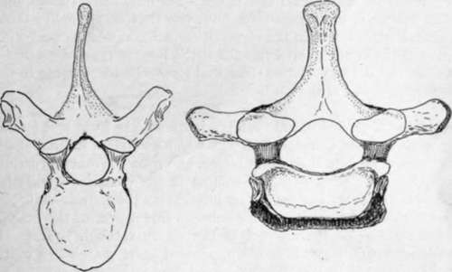

Dorsal Vertebra
Description
This section is from the book "The Anatomy Of The Human Skeleton", by J. Ernest Frazer. Also available from Amazon: The anatomy of the human skeleton.
Dorsal Vertebra
The distinguishing mark of this series is the presence of costal facets on the bodies. Other general characters, as seen in a middle vertebra in the series, are as follows :-
Body somewhat triangular or heart-shaped viewed from above, and slightly deeper behind than in front, carrying an upper and a lower costal demi-facet on each lateral aspect, which are covered with fibro-cartilage in the recent state.
Upper intervertebral notches very shallow or even absent, lower notches correspondingly deep.
Transverse processes strong, directed backwards and outwards, with somewhat clubbed extremities carrying a costal facet, for the tubercle of the rib, on their front aspects.
Articular processes have joint surfaces in a nearly vertical plane, but looking very slightly outwards as well as backwards in the upper pair, and in the opposite direction in the lower pair.
Spinous processes long and directed obliquely downwards, ending in a slightly marked tubercle.
Spinal foramen more or less circular and small, the canal being well covered behind by the overlapping of the broad laminae and spines.
At the ends of the series the vertebrae become modified, and the ribs, which typically articulate by their heads with the bodies of two vertebrae and the intervening disc, show a tendency to confine their articulation to one vertebra. |These changes enable certain of the segments to be recognised fairly easily and certainly.
Fig. 23.-First dorsal (right) contrasted with typical dorsal (left) to show their characters, which have been somewhat exaggerated.
The FIRST DORSAL VERTEBRA is like the last cervical in its general shape^but possesses no foramen in its transverse process, and this, with the presence of the costal facets, marks it at once as dorsal. The facets are in the form of one more or less complete on the upper part of each side of the body, with a small part of a second facet below, and one on the transverse process (Fig. 23).
The upper surface of the body is concave from side to side like the cervical bodies.
The upper intervertebral notches are deep, and the articular surfaces behind are slightly more oblique than in the usual dorsal type and do not face at all outwards.
The thick spine is longer than that of the last cervical, but otherwise rather like it, and is directed almost horizontally.
The spinal foramen is more of the cervical shape, and is somewhat larger than the typical dorsal foramen, because it contains the terminal part of the cervical enlargement of the cord.
In the lower end of the series the modification of the costal articulations is marked, in conjunction with other changes associated mostly with the decrease in the development of the ribs carried by the vertebrae.
Thus the tenth rib frequently articulates with one vertebra only, the tenth dorsal, so that the ninth dorsal vertebra may only present on its body a large " demi-facet " above, and none below : usually, however, there is at least an indication of the former presence of the lower rib, if not an actual articular surface, and there is always a facet on the transverse process.
The TENTH VERTEBRA has a whole facet, or nearly a whole facet, on its body above, and none below, with one on the transverse process : this last, however, may not show a recognisable articular surface.
The ELEVENTH AND TWELFTH DORSAL VERTEBRA are alike in having complete single facets on each side of the bodies with none on the transverse processes, which are reduced to thick, stunted, and tuberculated projections. The spines are also reduced to short and somewhat pointed projections extending nearly horizontally backwards.
Though alike in these characters, the two vertebras may usually be distinguished by their articular processes, for whereas those of the eleventh are dorsal in character, those of the twelfth are only dorsal above, the lower ones being turned out like those in the lumbar series : it must be added, however, that occasionally, though rarely, this double character is present in the eleventh segment, in which case both upper and lower processes in the twelfth vertebra exhibit the lumbar type of conformation.
In these last two dorsal vertebrae the spinal foramen widens owing to the presence of the lumbar enlargement of the cord.
The centrum of a typical dorsal vertebra is covered in front and laterally by the fibres of the wide anterior common ligament which separates it from the intercostal arteries that pass out on it to their destinations, and from the other structures that are described as being in relation with the column in the posterior mediastinum. But one of these, the Aorta, usually leaves its impress on the middle vertebrae notwithstanding, in the shape of a raising of the concave side aspect of the body, so that it presents a flat surface for the support of the artery through the ligament. This flattening of the left side may affect the upper and lower margins as well, giving an asymmetrical appearance to the bone examined, and is accompanied by a difference in the aspect of the texture of the bone as seen on the surface. The " aortic impression " produced in this way is best marked on the fifth body, but can be followed down from this for the succeeding two or three vertebrae, finally fading towards the front of the bones at about the ninth segment; in some columns the impression cannot be demonstrated certainly. Large vascular -foramina can be seen, mainly on the sides of the bodies, which transmit veins through the ligament, or round its edges, to the azygos veins : in the bodies of the vertebrae these lateral channels are connected with the posterior one, which makes its exit by means of one or two foramina on the neural surface of the body, through which veins pass beside the posterior common ligament to join the spinal venous plexus (anterior longitudinal spinal veins), which extends behind the vertebral bodies for the length of the column.
Continue to:
- prev: Atlas
- Table of Contents
- next: Dorsal Vertebra. Continued